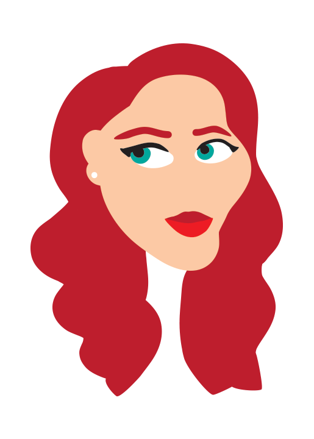
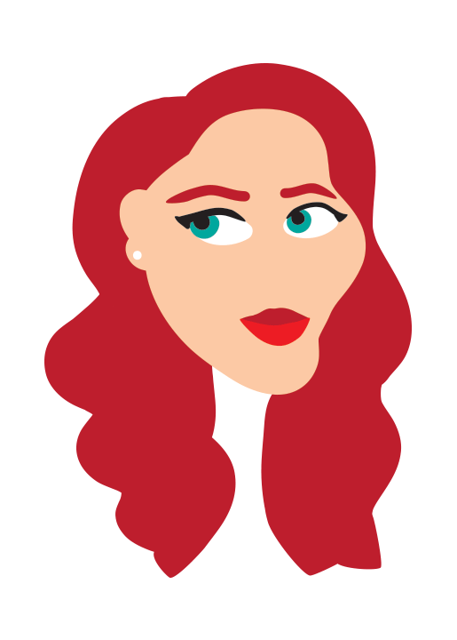
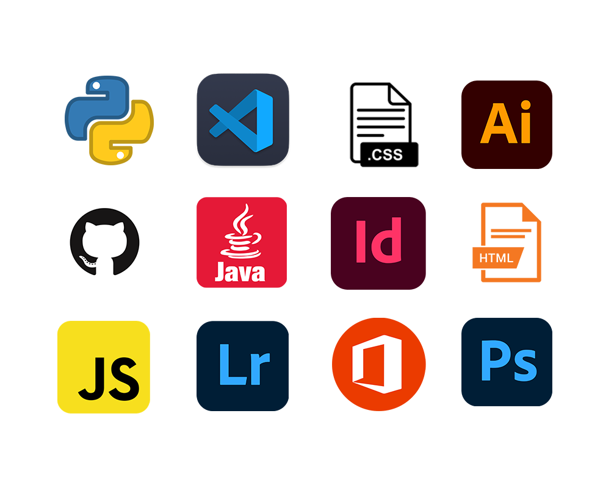

I made the following designs using Adobe Illustrator and Adobe Photoshop. I love bright colors and playful designs, and combining simple elements with the fantastical.


 


All photos taken and edited by me, using a Canon Rebel SL1. Learn more about my techniques in my photo book.
Portrait of Vern
Lighting: snoot on a speedlight
ISO 200, 1/125 sec, f/16, 38mm
Rainy Tulip
Lighting: natural light
ISO 200, 1/200 sec, f/11, macro filter
Lower Mesa Falls
Lighting: natural, bracketed
ISO 100, 1/320 sec, f/7.1, 52mm
Portrait of Stan
Lighting: color changing LEDs
ISO 800 1/80 sec, f/5.6, 55mm
Proficient in these programs & languages:
